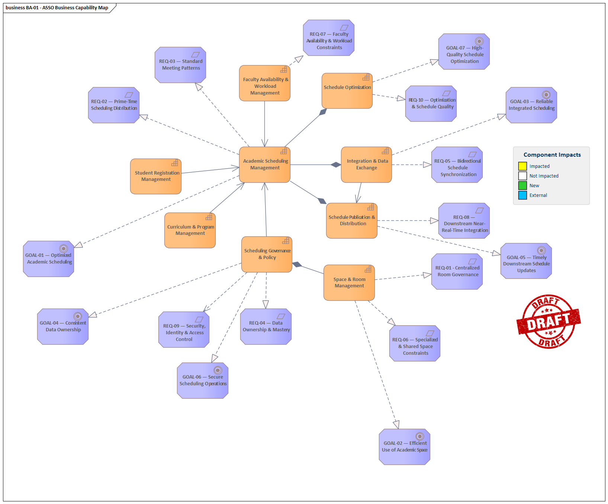
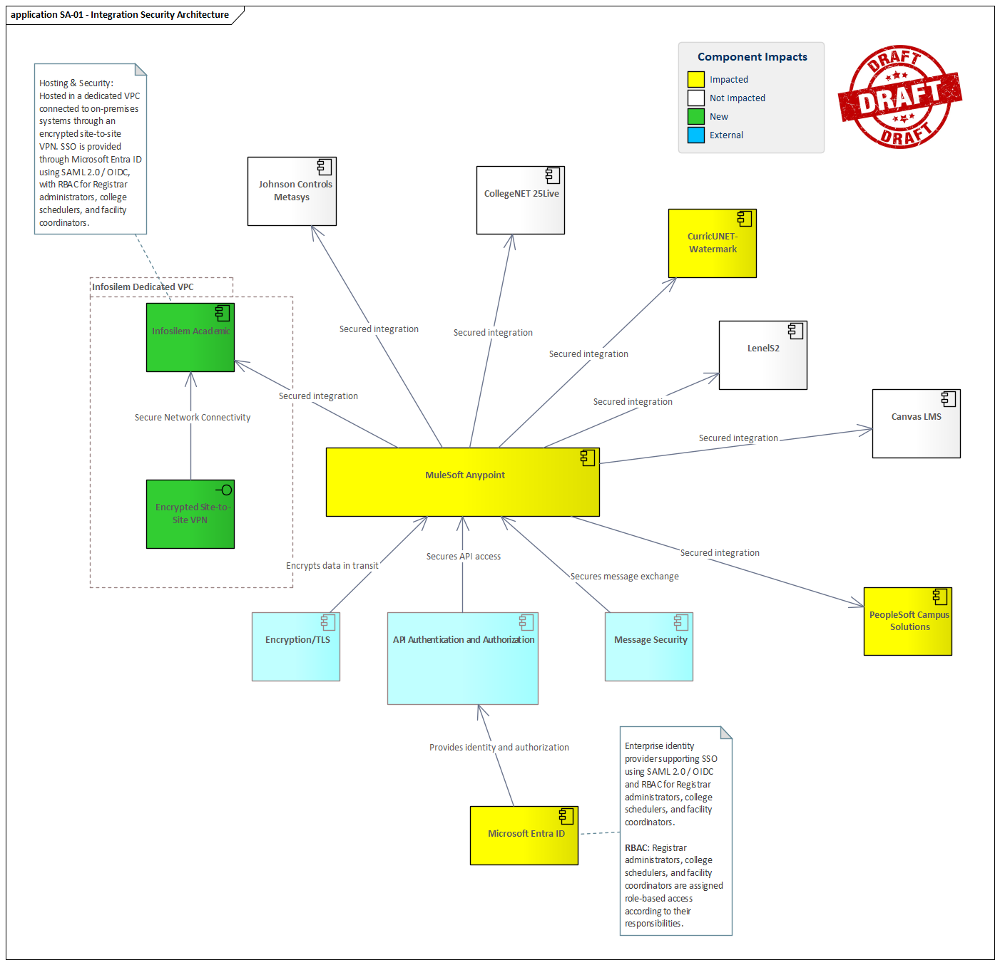
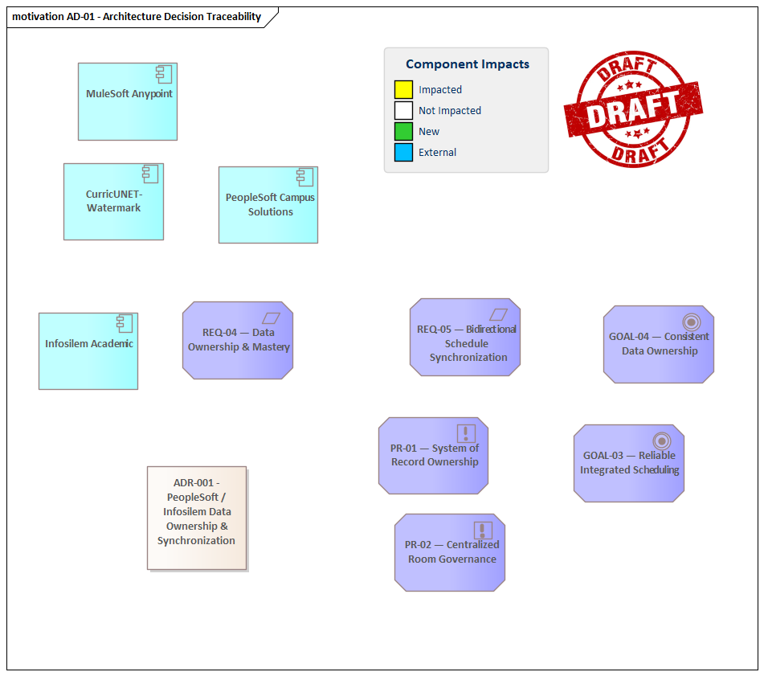
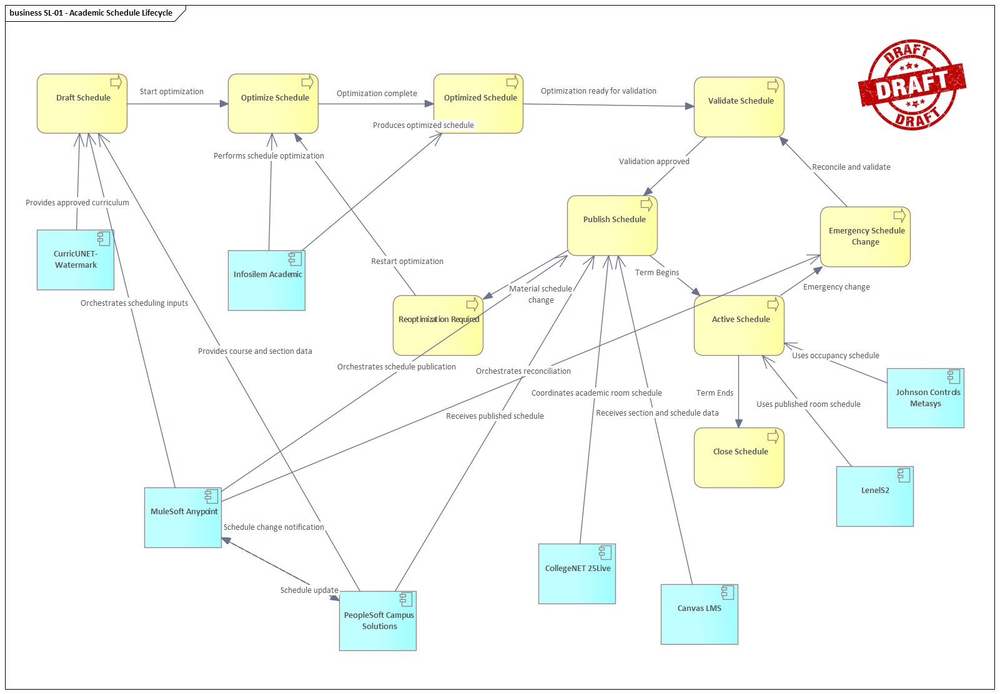

ASSO Architecture Approach & Execution
Overview
Metropolitan State University (MSU) is implementing Infosilem Academic to support Academic Scheduling & Space Optimization (ASSO) across approximately 34,000 students, 14 degree-granting colleges, three campuses and approximately 4,900 course sections per term.
The architecture must address more than the technical integration of applications. It must establish clear data ownership, define synchronization behavior, accommodate institutional scheduling policy, protect specialized spaces, support faculty constraints and ensure that downstream operational systems receive reliable schedule updates.
Establish the baseline, make ownership and requirements explicit, design the target architecture, define synchronization and conflict rules before implementation, validate through a controlled pilot, and establish governance mechanisms that remain effective after production deployment.
The approach follows TOGAF-aligned architecture practices without assuming that MSU has formally adopted TOGAF. Architecture Vision, Baseline Architecture, Target Architecture, Gap Analysis, Migration Planning, Implementation Governance, Architecture Change Management and continuous Requirements Management are used as practical organizing principles.
Case Study: Enterprise Implementation & Integration of Infosilem Academic
1. Institutional Context & Business Need
Metropolitan State University (MSU) is a comprehensive public research university serving approximately 34,000 undergraduate and graduate students across 14 degree-granting colleges. The institution operates across three main physical footprints:
- Central Campus: Houses liberal arts, sciences, business, and engineering, comprising 190 general-purpose classrooms and 85 specialized instructional laboratories.
- Health Sciences Campus: Dedicated to medicine, nursing, and allied health professions, characterized by rigid cohort-based curricula and accredited clinical lab requirements.
- Downtown Center: Focuses on continuing studies, executive master's programs, and community-partner shared facilities.
Each term, MSU schedules approximately 4,900 course sections.
Historical Deficits
Historically, course scheduling operated under a decentralized, manual model:
- Fragmented Ownership: Academic departments maintained de facto ownership over specific classrooms and generated schedules independently using localized spreadsheets.
- Severe Peak-Load Imbalances: More than 80% of classroom capacity was requested between 10:00 AM and 2:00 PM on Tuesdays and Thursdays, while early morning, evening, and Friday utilization languished below 22%. Overall institutional classroom utilization stood at 46%.
- Degree Pathway Conflicts: Uncoordinated departmental timetables caused cross-departmental bottlenecks for required core and elective courses, directly hindering on-time graduation metrics.
- Operational Disconnects: Ad-hoc room booking and manual adjustments routinely conflicted with campus event services, custodial work orders, and HVAC energy conservation cycles.
To modernize operations, the Provost and the Vice President for Information Technology sponsored the Academic Scheduling & Space Optimization (ASSO) initiative, selecting the Infosilem Academic Suite (Infosilem Timetabler, Infosilem Campus, and Infosilem Portal) to establish an algorithmic, constraint-driven scheduling ecosystem. The project explicitly recognizes the optimized synergistic paradox as a core architectural tension that must be managed.
2. Completed Milestones & Baseline Decisions
Over the past nine months, the project team achieved the following governance and technical milestones:
Governance & Policy Ratifications
- Centralized Room Governance: The Faculty Senate and Council of Deans enacted an institutional policy establishing that all general-purpose instructional spaces are university assets managed centrally through the Infosilem engine.
- Prime-Time Distribution Caps: Academic departments are restricted from scheduling more than 45% of their total weekly contact hours during prime-time windows (Monday–Thursday, 9:30 AM – 2:30 PM).
- Standard Meeting Patterns: Standard 50-minute (MWF) and 75-minute (TR) meeting patterns were formally mandated, eliminating irregular ad-hoc time blocks.
Infrastructure & Technical Foundation
- Hosting & Identity: The Infosilem suite has been provisioned in a dedicated VPC connected via encrypted site-to-site VPN to on-premises systems. SSO is implemented using Microsoft Entra ID via SAML 2.0 / OIDC with role-based access control (RBAC) tiers established for Registrar administrators, college schedulers, and facility coordinators.
- Data Cleansing: Enterprise IT completed an initial data hygiene initiative within the Student Information System (SIS), normalizing room feature tags, verifying seat capacities, and resolving orphaned instructor IDs across historical records.
- Pilot Validation: A retrospective dry-run using historical data from the College of Engineering and College of Arts and Sciences proved that the algorithmic solver could resolve 95% of historical student schedule conflicts while reducing required room hours by 16%. This pilot also surfaced the optimized synergistic paradox in practical terms.
3. Current Enterprise Systems Landscape
The solution architect must integrate Infosilem across a heterogeneous enterprise ecosystem:
- Core SIS: Peoplesoft Campus Solutions (Oracle) — master system of record for course catalog, active term sections, instructor workload, and student registrations.
- Curriculum Management: CurricUNET / Watermark — definitive program requirements and contact-hour structures.
- Integration Platform: MuleSoft Anypoint — API management, message queuing, and orchestration.
- Event & Auxiliary Scheduling: CollegeNET 25Live — non-academic room reservations and events.
- Downstream Consumers:
- Learning Management System (Canvas) — timely section shells and roster feeds.
- Campus Access Control (LenelS2) — automated room unlock schedules based on live course times.
- Building Automation & HVAC (Johnson Controls Metasys) — scheduled occupancy data drives dynamic energy setbacks.
The architecture must explicitly reconcile near-real-time downstream latency with Infosilem's batch optimization windows — another manifestation of the optimized synergistic paradox.
4. Current Challenges & Architectural Ambiguities
- System of Record & Bidirectional Sync Cadence: There is no consensus on data mastery during active scheduling windows. The end-to-end mechanism for delta detection, bidirectional reconciliation, and freeze/publish schedules remains undefined.
- Specialized & Shared Space Constraints: Units such as wet labs, performing arts spaces and clinical simulation suites require custom turnover buffers, prep equipment, and safety certifications that standard timetabling rules do not capture.
- Faculty Availability & Workload Rules: Collective bargaining agreements impose constraints (daily spread, multi-campus travel) that must be modeled without creating infeasible solver conditions.
- Real-Time Latency vs. Optimization Batch Windows: Downstream systems require near-real-time updates while Infosilem performs best with large-scale batch optimizations.
5. Candidate Assessment Prompt
Scenario: You have been hired as the Solution Architect for the ASSO initiative. Executive leadership has committed procurement, formed governance, completed initial data hygiene, and ratified prime-time policy. Detailed technical architecture designs, end-to-end integration specifications, data ownership boundaries, and operational execution frameworks remain unfinalized. You are tasked with leading solution architecture through to production go-live.
Assignment: Present a structured, end-to-end architectural approach and execution plan that addresses the challenges described above. Your response must include a concrete sequential approach for baseline assessment, target design, validation, stakeholder collaboration, artifact production, and an ADR that codifies lifecycle-aware data ownership and bidirectional synchronization logic between Infosilem and Peoplesoft.
1. Architecture Vision & Scope
Business Context
The ASSO initiative introduces an optimization engine into an established academic ecosystem. PeopleSoft Campus Solutions remains the master for core academic and student information, while CurricUNET / Watermark is authoritative for curriculum and program requirements. Infosilem becomes the planning and optimization environment for academic schedules and room assignments.
MuleSoft Anypoint provides the enterprise integration and orchestration layer connecting these systems to downstream platforms including CollegeNET 25Live, Canvas LMS, LenelS2 and Johnson Controls Metasys.
Architecture Objectives
- Establish explicit data ownership and mastery boundaries.
- Integrate Infosilem without undermining PeopleSoft or CurricUNET authority.
- Support bidirectional synchronization during the scheduling lifecycle.
- Support comprehensive batch optimization and timely downstream updates.
- Enforce centralized university room governance.
- Enforce prime-time distribution caps and standard meeting patterns.
- Represent specialized/shared-space constraints.
- Represent faculty availability, workload and multi-campus travel constraints.
- Provide reliable schedule publication and downstream propagation.
- Provide operational governance for changes after implementation.
Scope
Architecture Scope
- Business architecture
- Application architecture
- Data architecture
- Integration architecture
- Security considerations
- Data ownership
- Synchronization and reconciliation
- Implementation and migration
Operational Scope
- Academic scheduling
- Room assignment
- Faculty constraints
- Student schedule conflicts
- Downstream schedule publication
- Room access automation
- Occupancy-driven building operations
- Non-academic space coordination
2. Baseline Architecture Assessment
The first architectural activity is to establish a fact-based baseline rather than immediately designing the target solution.
Sequential Baseline Assessment
Document PeopleSoft Campus Solutions, CurricUNET / Watermark, MuleSoft, Infosilem, 25Live, Canvas, LenelS2 and Metasys and identify the business processes each system supports.
Identify which application currently creates, maintains and publishes each critical scheduling data domain.
Identify APIs, files, messaging, batch interfaces, database exchanges and manual processes.
Compare the current integration behavior with the required scheduling lifecycle, ownership model, latency requirements and operational constraints.
Review the baseline with Registrar, schedulers, PeopleSoft, middleware, Infosilem, Facilities, Security, LMS and other affected teams before treating it as authoritative.
BL-01 — Baseline Enterprise System Context establishes the baseline application ecosystem and major information flows. It gives technical and functional stakeholders a common starting point before target-state decisions are made.
{kind=link}
3. Requirements & Stakeholder Analysis
Institutional Requirements
| ID | Requirement | Type | Architectural Response |
|---|---|---|---|
| REQ-01 | Centralized Room Governance | Non-functional | University instructional spaces managed centrally through Infosilem. |
| REQ-02 | Prime-Time Scheduling Distribution | Non-functional | Enforce the 45% prime-time contact-hour cap. |
| REQ-03 | Standard Meeting Patterns | Functional | Support 50-minute MWF and 75-minute TR patterns. |
| REQ-04 | Data Ownership & Mastery | Non-functional | Explicit source-of-truth boundaries and lifecycle rules. |
| REQ-05 | Bidirectional Schedule Synchronization | Functional | Support controlled exchange between PeopleSoft and Infosilem. |
| REQ-06 | Specialized & Shared Space Constraints | Functional | Represent equipment, certification, turnover and shared-space requirements. |
| REQ-07 | Faculty Availability & Workload Constraints | Functional | Account for daily spread, workload and multi-campus travel. |
| REQ-08 | Downstream Near-Real-Time Integration | Non-functional | Propagate schedule changes to operational consumers promptly. |
| REQ-09 | Security, Identity & Access Control | Non-functional | Use enterprise identity, authorization and secure integration. |
| REQ-10 | Optimization & Schedule Quality | Functional | Use Infosilem optimization to improve schedule quality and space utilization. |
RT-01 — Requirements to Architecture Traceability connects drivers, goals, principles, constraints, requirements and architecture elements. This makes requirements testable and prevents architectural decisions from becoming disconnected from institutional needs.
{kind=link}
Stakeholders
| Stakeholder Group | Primary Concern | Architecture Engagement |
|---|---|---|
| Registrar / Academic Operations | Schedule governance, institutional policy and operational authority. | Decision authority and acceptance. |
| College Schedulers | Practical scheduling workflows and local constraints. | Requirements, workshops, UAT and pilot. |
| Faculty / Instructors | Availability, workload and travel constraints. | Constraint validation. |
| Students | Schedule conflicts and usable academic schedules. | Outcome validation. |
| Facilities Management | Room governance, specialized spaces and occupancy. | Space requirements and operational validation. |
| Campus Security | Room access and automated unlock schedules. | Downstream integration validation. |
| Enterprise IT / Architecture | Enterprise standards, integration and governance. | Architecture ownership. |
| PeopleSoft Team | SIS data integrity and operational ownership. | Source-system authority and integration. |
| Infosilem Team | Optimization model and schedule planning. | Planning authority and optimization validation. |
| Integration / MuleSoft Team | APIs, messaging, routing and delivery. | Integration implementation. |
BA-02 — ASSO Stakeholder Map documents stakeholder relationships and influence. It is used to identify decision-makers, affected groups and teams required for architecture validation.
{kind=link}
4. Target Architecture
The target architecture separates business ownership from integration mechanics and establishes MuleSoft as the enterprise integration and orchestration layer.
{kind=link}
Target-State Responsibilities
| Component | Responsibility |
|---|---|
| PeopleSoft Campus Solutions | System of record for core academic and student information, active term sections, instructor workload and registrations. |
| CurricUNET / Watermark | Authority for curriculum, program requirements, requisites and approved contact-hour structures. |
| Infosilem Academic | Planning and optimization authority for schedules, meeting patterns and room assignments within the scheduling lifecycle. |
| MuleSoft Anypoint | Integration, transformation, routing, orchestration, validation, correlation, retry, delivery and reconciliation mechanics. |
| 25Live | Non-academic room reservations and event coordination. |
| Canvas | Downstream learning-management section and schedule integration. |
| LenelS2 | Room access and automated unlock schedules. |
| Johnson Controls Metasys | Occupancy-driven building operations and HVAC scheduling. |
MuleSoft orchestrates integration but does not become the business system of record and does not independently determine business outcomes when systems disagree.
5. Data Architecture & Ownership
Data ownership is established before detailed synchronization behavior. This prevents the integration layer from becoming the accidental authority for business data.
Ownership Model
| Data Domain | Authoritative System | Role of Infosilem | Role of MuleSoft |
|---|---|---|---|
| Course | PeopleSoft | Consumes for scheduling. | Transforms and routes. |
| Course Section | PeopleSoft | Schedules and optimizes. | Synchronizes lifecycle changes. |
| Instructor | PeopleSoft | Uses availability/workload constraints. | Transforms and distributes. |
| Student Registration | PeopleSoft | Consumes demand for optimization. | Routes registration information. |
| Curriculum / Program Requirements | CurricUNET / Watermark | Consumes scheduling constraints. | Routes authoritative curriculum data. |
| Room | Infosilem for academic scheduling planning | Manages academic scheduling attributes and assignments. | Synchronizes with operational consumers. |
| Meeting Pattern | Infosilem during scheduling planning | Optimization and scheduling. | Synchronizes published results. |
| Room Assignment | Infosilem during planning | Optimization output. | Publishes operational result. |
| Academic Schedule | Infosilem during planning; published operational schedule after publication | Creates optimized schedule. | Publishes and distributes. |
| Non-academic Event | 25Live | Must respect shared-space constraints. | Coordinates exchange. |
MuleSoft owns no business data. It owns integration mechanics: transformation, routing, correlation, sequencing, delivery, retry and reconciliation processing. No business logic in the middleware!
DA-01 — Target Academic Scheduling Data Domains defines the business objects and their relationship to application components. It provides the data ownership foundation for the ADR and integration design.
{kind=link}
6. Integration & Synchronization Strategy
The architecture deliberately uses multiple integration mechanisms. No single mechanism satisfies the scheduling lifecycle.
| Mechanism | Primary Use | Rationale |
|---|---|---|
| API | Current-state queries and controlled updates. | Low-latency synchronous integration. |
| Message Queue | Asynchronous business-system updates. | Decoupling, buffering and reliable delivery. |
| Event Streaming | Schedule and operational change propagation. | Near-real-time downstream notification. |
| Batch ETL / Batch Interface | Large-volume initialization, reconciliation and optimization inputs/outputs. | Suitable for comprehensive datasets and solver processing. |
MuleSoft API Layer
- Scheduling API
- Room schedule API
- Curriculum / program requirements access
- Room/access schedule requests
MuleSoft Messaging Layer
- Asynchronous scheduling messages to Infosilem.
- Published schedule messages to downstream consumers.
- Canvas section and schedule events.
- LenelS2 room schedule messages.
- Metasys occupancy schedule messages.
Infosilem Batch Optimization Interface
Infosilem requires comprehensive scheduling information to optimize schedules across students, rooms, instructors, meeting patterns and institutional constraints. Batch exchange therefore remains a fundamental part of the architecture.
We solve the optimized synergistic paradox by separating the optimization lifecycle from the operational synchronization lifecycle.
The core is:
Comprehensive data for optimization → Infosilem optimizes → incremental governed updates → operational systems stay current
In practice
-
Build a comprehensive planning dataset
- PeopleSoft supplies course, section, instructor, registration and related academic data.
- CurricUNET supplies curriculum/program requirements.
- Room information and constraints are supplied to the planning process.
- Infosilem gets the broad constraint set it needs to optimize the schedule.
-
Infosilem performs the optimization
- It considers room capacity/features, meeting patterns, prime-time limits, faculty availability, daily spread, campus travel, specialized-space constraints, etc.
- The resulting planning schedule and optimization outputs are authoritative within the scheduling-planning lifecycle.
-
MuleSoft distributes the resulting changes
- MuleSoft doesn't become another system of record.
- It detects deltas, transforms them, routes them and delivers them through the appropriate mechanism.
-
Use different integration mechanisms for different needs
- Query/update with immediate response — API
- Reliable asynchronous schedule change — Message queue
- Near-real-time downstream notification — Event streaming
- Large comprehensive optimization/reconciliation cycle — Batch ETL
Don't force everything into real-time. That's the important part. Infosilem's optimization requires a broad, relatively complete view of constraints and relationships. Trying to optimize every individual change immediately as it happens would undermine the optimization process.
Conversely, making Canvas, LenelS2, or Metasys wait for the next comprehensive optimization cycle would make the operational environment unnecessarily stale.
So we deliberately have two tempos:
Optimization tempo: comprehensive/batch
Operational tempo: incremental/event-driven
And data ownership determines what happens when those tempos collide.
For example, if PeopleSoft changes an instructor during an active scheduling window:
PeopleSoft change → MuleSoft detects delta → determine lifecycle/ownership → Infosilem revalidation or re-optimization if required → approved schedule change → MuleSoft publishes downstream
MuleSoft doesn't decide which system is "right." The ownership and lifecycle rules in ADR-01 determine that.
That's why the phrase optimized synergistic paradox works for this case: the architecture doesn't try to eliminate the tension between comprehensive optimization and near-real-time operations. It uses both deliberately, with ownership and lifecycle rules governing the boundary between them.
IA-01 — Target Integration Architecture defines the MuleSoft API layer, messaging layer and Infosilem batch optimization interface.
{kind=link}
7. Schedule Changes & Edge Cases
7.1 Schedule Delta Management
Every material scheduling change must be identifiable as a delta rather than requiring the entire schedule to be treated as changed.
- Detect the source-system change.
- Identify the affected schedule entity and version.
- Correlate the change with the current scheduling lifecycle.
- Determine the authoritative system for the affected data.
- Validate downstream impacts.
- Route the change to the appropriate business process.
- Publish the approved result to affected consumers.
- Record the transaction and reconciliation state.
MuleSoft performs detection, correlation, routing and delivery. It does not independently decide which business outcome is correct.
7.2 Conflicting PeopleSoft and Infosilem Changes
A PeopleSoft change does not automatically win simply because PeopleSoft is a major system of record. Authority depends on the data element and lifecycle state.
| Conflict | Resolution Principle |
|---|---|
| Course name differs | PeopleSoft remains authoritative. |
| Program requirement differs | CurricUNET / Watermark remains authoritative. |
| Room assignment differs during optimization | Infosilem may be authoritative within the planning lifecycle. |
| Published schedule unexpectedly changes | Evaluate lifecycle state, ownership and whether re-validation or re-optimization is required. |
7.3 Live Registration During Scheduling
Registration changes can alter demand and therefore affect the optimization problem.
- PeopleSoft remains authoritative for registration.
- Registration deltas are propagated through MuleSoft.
- Infosilem receives updated demand information.
- Material changes are assessed for scheduling impact.
- Where required, the schedule is re-validated or re-optimized.
- Approved schedule changes are published downstream.
7.4 Multi-Campus Faculty Travel
Faculty collective bargaining constraints require more than simply checking whether an instructor is available at a particular time. Scheduling must account for the feasibility of moving between campuses.
- Represent campus as a scheduling attribute.
- Represent instructor teaching commitments by time and campus.
- Apply minimum travel/transition time between campuses.
- Prevent incompatible consecutive assignments.
- Validate solver results against collective bargaining rules.
7.5 Specialized and Shared Spaces
Specialized-space requirements are represented as room attributes and scheduling constraints rather than creating unnecessary standalone business objects.
- Equipment requirements.
- Safety certifications.
- Capacity.
- Turnover buffers.
- Shared-space availability.
- Non-academic reservations.
7.6 Freeze and Publish Lifecycle
A controlled lifecycle is required to distinguish a working optimized schedule from the published operational schedule.
DR-01 — Schedule Delta & Conflict Resolution captures the detailed integration relationships supporting schedule changes, batch optimization and MuleSoft orchestration.
{kind=link}
8. Stakeholder Collaboration & Governance
The architecture must be constructed collaboratively because the difficult decisions are institutional as well as technical.
Constructive Working Model
| Group | Action |
|---|---|
| Enterprise IT / Architecture | Establish architecture principles, integration standards, decision governance and traceability. |
| DBAs / PeopleSoft Team | Validate source data, ownership, performance and extraction constraints. |
| Middleware Developers | Convert architecture decisions into APIs, messages, transformations, routing and operational controls. |
| Registrar / Academic Operations | Establish authoritative scheduling policies and lifecycle decisions. |
| Academic Schedulers | Validate actual scheduling workflows, exceptions and usability. |
| Deans / Department Chairs | Resolve institutional priorities and validate policy impacts. |
| Faculty Senate | Validate academic policy, faculty constraints and governance implications. |
| Facilities | Validate room characteristics, shared-space constraints and operational use. |
| Campus Security | Validate room access automation and downstream operational timing. |
Resolving Trade-offs
When stakeholders disagree, I would avoid resolving the issue through authority or opinion. Instead, I would make the disagreement explicit and convert it into a documented architectural decision.
- Define the disputed business outcome.
- Identify the data elements affected.
- Identify existing policy or contractual constraints.
- Identify the authoritative business owner.
- Document the technical consequences of each option.
- Test the options against institutional requirements.
- Escalate only the unresolved business decision.
- Record the final decision in an ADR.
- Trace implementation work back to the decision.
If departmental resistance threatens architectural integrity, I would separate legitimate local requirements from requests to bypass enterprise governance. Local exceptions should be documented, bounded and evaluated for enterprise impact rather than silently becoming architectural precedent.
This approach allows stakeholders to disagree constructively while ensuring that the architecture remains traceable to requirements, policy and explicitly approved decisions.
9. Gap Analysis & Implementation Strategy
The gap analysis converts the difference between baseline and target architecture into actionable implementation stages.
| Gap | Description | Resolution |
|---|---|---|
| G01 | Data & Ownership Gap | Establish ownership, mastery boundaries, lifecycle and synchronization rules. |
| G02 | Integration Gap | Implement APIs, messaging, batch interfaces, transformations and orchestration. |
| G03 | Validation & Readiness Gap | Perform integration, optimization, security, performance, end-to-end, pilot and UAT testing. |
| G04 | Production Readiness Gap | Establish monitoring, support, training, deployment, cutover and rollback capability. |
RM-01 — ASSO Implementation Roadmap organizes the transition through Baseline, Data Foundation, Integrated Solution, Pilot and Production plateaus.
{kind=link}
10. Implementation & Migration
Plateau 1 — Baseline
- Confirm application inventory.
- Confirm current interfaces.
- Confirm data ownership.
- Validate requirements and constraints.
Plateau 2 — Data Foundation
- Normalize source data.
- Resolve orphaned instructor identifiers.
- Verify room capacities.
- Normalize room feature tags.
- Establish ownership and lifecycle rules.
Plateau 3 — Integrated Solution
- Implement MuleSoft APIs.
- Implement messaging.
- Implement Infosilem batch interfaces.
- Implement transformation and mappings.
- Implement downstream integrations.
- Implement delta detection and correlation.
Plateau 4 — Pilot
- Run historical schedule replay.
- Validate solver behavior.
- Validate student conflicts.
- Validate room utilization.
- Validate faculty constraints.
- Perform scheduler UAT.
Plateau 5 — Production
- Complete operational readiness.
- Train support and scheduling teams.
- Establish monitoring.
- Execute controlled cutover.
- Maintain rollback capability.
- Transition to operational governance.
11. Validation & Pilot
Validation must demonstrate that the target architecture works against real institutional requirements rather than only proving that messages can technically move between systems.
Validation Layers
- Data validation — verify ownership, completeness, identifiers, room data and mappings.
- Integration testing — verify APIs, messaging, transformation, routing and error handling.
- Optimization validation — verify that Infosilem respects institutional constraints.
- Performance testing — validate expected scheduling and integration volumes and latency.
- End-to-end testing — trace a change from source system through Infosilem and downstream consumers.
- User acceptance testing — validate actual scheduler and Registrar workflows.
- Pilot validation — compare generated schedules with historical institutional outcomes.
The historical dry-run using the College of Engineering and College of Arts and Sciences demonstrated that the solver resolved approximately 95% of historical student schedule conflicts and reduced required room hours by approximately 16%.
These results should be treated as pilot validation evidence and followed by broader institutional testing before production acceptance.
Acceptance Questions
- Are ownership rules understood and accepted?
- Are schedule changes correctly detected and correlated?
- Are conflicts resolved according to lifecycle and ownership rules?
- Are prime-time constraints enforced?
- Are specialized spaces protected?
- Are faculty travel constraints respected?
- Are downstream updates sufficiently timely?
- Can failed transactions be reconciled?
12. Production Readiness
Production readiness is treated as an architecture concern rather than solely an operational handoff.
Technical Readiness
- API monitoring
- Message monitoring
- Batch monitoring
- Error handling
- Retry handling
- Correlation identifiers
- Reconciliation procedures
Operational Readiness
- Support procedures
- Runbooks
- Training
- Cutover plan
- Rollback plan
- Incident escalation
- Business ownership
Architecture Change Management
Once production begins, changes to ownership, synchronization, interfaces or scheduling policy must be evaluated through architecture governance rather than implemented independently by individual teams.
13. Architecture Artifacts
Sparx Enterprise Architect is the authoritative architecture modeling repository. The artifacts are deliberately connected so that requirements, stakeholders, architecture decisions and implementation work remain traceable.
| Artifact | Audience | Technical Purpose | Governance / Risk Value |
|---|---|---|---|
| BL-01 | Enterprise Architecture, IT, application teams | Establish baseline systems and information flows. | Prevents target architecture from being based on assumptions. |
|
 BA-01 |
Architecture and institutional leadership | Define business capabilities required by ASSO. | Connects technology investment to business capability. |
| BA-02 | Architecture, leadership, project governance | Identify stakeholders and influence relationships. | Reduces stakeholder and decision risk. |
| RT-01 | Architecture, business stakeholders, QA | Trace requirements to goals and architecture elements. | Provides measurable requirements coverage. |
| TA-01 | Enterprise Architecture, application teams | Define target application relationships. | Provides the high-level implementation direction. |
| DA-01 | Data architects, application owners, DBAs | Define scheduling data domains and ownership. | Prevents ownership ambiguity and synchronization conflicts. |
|
 SA-01 |
Architecture and modeling team, enterprise architecture | System Architecture model capturing component-level design and deployment. | Provides an authoritative modeled artifact for implementation and operations. |
| IA-01 | Middleware developers, integration architects | Define APIs, messaging and batch integration mechanisms. | Directs engineering implementation. |
| DR-01 | Integration developers, application teams | Define detailed schedule-change and conflict mechanics. | Reduces ambiguity in difficult live-change scenarios. |
|
 ADR-01 |
Architecture governance, Registrar, system owners | Codify ownership and bidirectional synchronization decisions. | Provides formal decision authority and prevents recurring debate. |
|
 SL-01 |
Architecture authors, ADR authors, enterprise architecture | Schedule Lifecycle model describing planned → optimized → published → operational → changed and associated ownership rules. | Clarifies lifecycle-driven ownership used by ADRs and conflict resolution. |
| RM-01 | Program management, architecture, delivery teams | Define transition plateaus and architecture gaps. | Tracks implementation progress and readiness. |
{kind=link}
{kind=link}
{kind=link}
{kind=link}
These artifacts are maintained as living architecture assets. Changes to requirements, ownership, interfaces or major implementation decisions are reflected in the appropriate model or ADR and traced through the delivery lifecycle.
SL-01 — Schedule Lifecycle Model (Architecture artifact to be produced)
This artifact documents the schedule lifecycle states and transitions (planned → optimized → published → operational → changed) and the authoritative ownership rules that depend on lifecycle state. It is specifically intended to complement ADR-01 by making lifecycle-driven ownership explicit rather than assuming a single system always wins. Model production is planned and this artifact should be produced in the architecture repository (Sparx) during the next modeling cycle.
14. Architecture Decision Record
ADR-01 — Academic Schedule Data Ownership & Bidirectional Synchronization
Status: AcceptedDecision Summary
PeopleSoft Campus Solutions remains the authoritative system for core academic and student data, including course definitions, active term sections, instructor workload records and student registrations.
CurricUNET / Watermark remains authoritative for curriculum, program requirements, requisites and approved contact-hour structures.
Infosilem Academic is authoritative for scheduling optimization outputs within the planning lifecycle, including meeting patterns, room assignments and the optimized academic schedule. Once a schedule is formally published, the published schedule becomes the operational schedule distributed to downstream consumers.
MuleSoft Anypoint is the enterprise integration and orchestration layer. MuleSoft owns no business data. It manages synchronization, transformation, routing, validation, correlation, sequencing, delivery, retry and reconciliation mechanics.
Why Bidirectional Synchronization Is Required
The scheduling lifecycle requires information to move in both directions. PeopleSoft provides authoritative academic inputs and may receive approved schedule changes. Infosilem consumes comprehensive scheduling inputs and produces optimized scheduling results.
A unidirectional model would therefore fail to represent the actual institutional lifecycle.
Ownership Rules
| Scenario | Authority | Action |
|---|---|---|
| Course definition changes | PeopleSoft | Propagate authoritative change to affected consumers. |
| Program requirement changes | CurricUNET / Watermark | Propagate authoritative curriculum change. |
| Instructor workload data | PeopleSoft | Use authoritative workload information for scheduling. |
| Student registration | PeopleSoft | Use registration changes to update scheduling demand. |
| Room assignment during optimization | Infosilem | Allow optimization engine to determine planning assignment. |
| Meeting pattern during optimization | Infosilem | Allow optimization engine to determine planning result. |
| Published schedule | Approved scheduling lifecycle | Distribute controlled published result to operational consumers. |
Conflict Resolution
Conflict resolution is based on data ownership and lifecycle state, not on a blanket rule that PeopleSoft always wins.
For example, a course name conflict is resolved in favor of PeopleSoft, while a room assignment produced by the Infosilem optimization process may be authoritative within the planning lifecycle.
When an unexpected change occurs to a published schedule, the integration process must evaluate the lifecycle state, ownership and impact before accepting, rejecting or re-optimizing the change.
MuleSoft Responsibilities
- Detect relevant deltas.
- Validate message structure and required data.
- Transform source representations.
- Route information to the correct system.
- Correlate related changes.
- Maintain sequencing where required.
- Retry failed deliveries.
- Detect discrepancies.
- Maintain reconciliation mechanics.
- Provide operational monitoring and traceability.
MuleSoft does not independently decide the business outcome of a conflict. The appropriate business process and authoritative system determine the valid result; MuleSoft distributes and records that result. (ie avoid placing business logic into middleware!)
Synchronization Approach
- Use APIs for synchronous retrieval and controlled updates where low-latency access is required.
- Use asynchronous messaging for reliable schedule-change propagation.
- Use event-driven integration for downstream near-real-time consumers.
- Use batch interfaces for comprehensive Infosilem optimization exchanges and large-scale reconciliation.
- Apply correlation identifiers and version information to material schedule changes.
- Retain failed or conflicting transactions for reconciliation rather than silently discarding them.
The Optimized Synergistic Paradox
The decision also addresses the optimized synergistic paradox: Infosilem requires a broad, optimized view of scheduling constraints, while downstream operational systems may require timely incremental updates.
The optimized synergistic paradox is therefore addressed by combining comprehensive batch optimization with API- and event-driven synchronization rather than forcing a single integration pattern.
Rationale
The decision preserves institutional ownership while allowing Infosilem to perform the optimization function for which it was introduced. It also prevents MuleSoft from becoming an accidental system of record.
The model recognizes that data authority can vary by domain and lifecycle stage. This is more accurate than assigning universal authority to a single application.
Consequences
Positive:
- Clear ownership boundaries.
- Controlled bidirectional synchronization.
- Support for both batch and near-real-time integration.
- Reduced ambiguity during scheduling conflicts.
- Better traceability of schedule changes.
- Clear separation between business decisions and integration mechanics.
Negative / Trade-offs:
- Synchronization logic is more complex than one-way integration.
- Lifecycle states must be explicitly defined.
- Reconciliation requires operational processes.
- Stakeholders must agree on ownership boundaries.
- Some changes may require re-validation or re-optimization.
Related Architecture
15. Success Measures
The architecture is successful when the institution can operate the scheduling lifecycle with clear ownership, predictable integration and measurable schedule quality.
| Measure | Evidence |
|---|---|
| Data ownership | Every critical scheduling domain has an accepted authoritative owner. |
| Synchronization | Material deltas are detected, correlated and delivered reliably. |
| Conflict management | Conflicts follow documented ownership and lifecycle rules. |
| Optimization | Infosilem produces schedules that satisfy institutional constraints. |
| Space utilization | Room utilization and required room hours demonstrate measurable improvement. |
| Student outcomes | Schedule conflict reduction is demonstrated during pilot and production validation. |
| Faculty constraints | Workload, availability and campus travel constraints are respected. |
| Downstream latency | Published changes reach operational consumers within agreed service objectives. |
| Operational readiness | Monitoring, reconciliation, support, rollback and governance are operational. |
| Architecture governance | Changes are traceable to requirements, decisions and approved architecture. |
MSU has a governed scheduling architecture in which PeopleSoft, CurricUNET, Infosilem and downstream systems retain clearly defined responsibilities; MuleSoft provides controlled enterprise integration; scheduling conflicts have explicit resolution rules; and the institution can operate comprehensive optimization together with timely downstream schedule propagation.
16. Architectural Approach & Implementation Plan
A. Sequential Architecture Approach
- Inventory and confirm the baseline (applications, interfaces, data domains) and publish BL-01.
- Identify stakeholders and responsibilities; produce BA-01 / BA-02 artifacts and confirm decision owners.
- Produce DA-01 (data domains and ownership) and an ownership table mapping each domain to a system owner.
- Define the Schedule Lifecycle model (SL-01) capturing planned → optimized → published → operational → changed states.
- Write Architecture Decision Records (ADR-01 and follow-ons) codifying ownership, lifecycle authority and high-level synchronization rules.
- Define detailed integration mechanics (DR-01) for delta detection, correlation, validation and conflict resolution.
- Design IA-01: the integration architecture (APIs, messaging, eventing, batch) with concrete interfaces and contracts.
- Implement MuleSoft adapters, transformations and replay/compensation mechanics in a development environment.
- Execute a controlled pilot (RM-01) with Colleges selected for validation, using production-like data and the DR-01 mechanics.
- Validate end-to-end behavior, update SL-01/DA-01/DR-01 as needed, and record ADR amendments.
- Plan and execute phased deployment with cutover, reconciliation, monitoring and rollback capabilities.
- Operate, govern and iterate: keep artifacts current and continuously manage requirements and ADRs.
B. Data Architecture & Ownership
Produce DA-01 and an ownership table that maps each scheduling data domain (course, section, instructor, room, meeting pattern, assignment, published schedule) to an authoritative system and to lifecycle ownership during planning, publication and operational states.
C. Integration Mechanisms
Use a combination of integration mechanisms described in IA-01:
- APIs — synchronous retrieval and controlled updates.
- Messaging — reliable asynchronous propagation of deltas.
- Event streaming — near-real-time notifications for downstream consumers.
- Batch ETL — comprehensive optimization exchanges and solver inputs/outputs.
D. Data Ownership → Update Strategy
Ownership and lifecycle authority determine synchronization strategy: the authoritative owner for a domain and the current lifecycle state (SL-01) together decide whether an incoming change is accepted, rejected, validated or triggers re-optimization. In short: ownership and lifecycle dictate synchronization and update behavior rather than a blanket system-precedence rule.
E. Critical Edge Cases
Schedule delta management
We establish the explicit flow:
Source change → MuleSoft detects delta → validates/routes/transports → appropriate business process → authoritative result → propagation
MuleSoft does not decide which business result is correct. Material changes can trigger validation or re-optimization as prescribed by SL-01 and ADR-01.
Conflict resolution during live registration
There is no blanket "PeopleSoft always wins" rule. Instead the authority depends on the data and lifecycle state. Examples:
- Student registration → PeopleSoft authority
- Core course data → PeopleSoft authority
- Curriculum requirements → CurricUNET authority
- Planning room assignment → Infosilem authority during planning
- Optimized schedule → Infosilem during planning
- Published schedule → operational lifecycle authority
If PeopleSoft and Infosilem disagree, the response depends on what data is conflicting and where the schedule is in its lifecycle — this is the central argument codified in ADR-01.
Multi-campus travel constraints
These belong primarily to the scheduling/optimization domain (Infosilem). Key modeling concerns include:
- Faculty availability
- Daily teaching spread
- Consecutive teaching blocks
- Campus-to-campus travel time
- Collective-bargaining constraints
These constraints should be modeled in Infosilem and informed by authoritative faculty/workload data from PeopleSoft (and local HR/union rules), not solved in the middleware layer.
17. Final Thoughts
- The architecture core of the case study is essentially that of data ownership: Data ownership → lifecycle authority → synchronization/update strategy → conflict resolution.
- Lifecycle authority should be relegated to a system outside the middleware (avoid putting business logic within the middleware!) but is excluded from the discussion as it's believed to be beyond the scope of the response (but it was noticed).
- Other UML views such as deployment view etc, is withheld due to perceived scope of the study.
- I forgot to mention I'm certified in Mulesoft Anypoint ops-stuff.